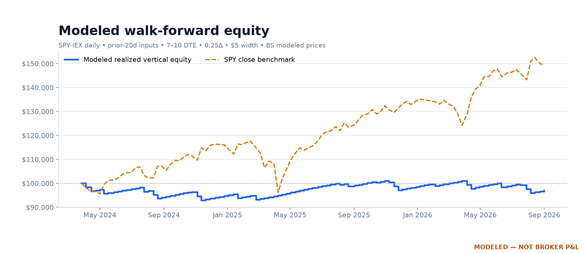

MODELED — NOT BROKER P&L
SPY vertical walk-forward
Rolling-origin test using Alpaca IEX daily stock bars. Every decision uses only prior observations; options are priced with Black-Scholes.
Total return-3.10%
Trades103
Win rate77.7%
Max drawdown-7.12%

Method
- walk_forward: rolling-origin; every decision uses only the preceding 20 closes
- signal: 20-day close return above +0.5% bullish, below -0.5% bearish, otherwise abstain
- pricing: Black-Scholes European price with rolling 20-day realized volatility
- structure: 7 calendar DTE target (actual 7-10), exact $5 width, 0.25 absolute short delta
- sizing: 2% equity max-loss budget, maximum 4 contracts, one vertical at a time
- costs: $0.02 modeled slippage per leg; commissions and regulatory fees excluded
Calendar folds
| Exit year | Trades | Modeled P&L |
|---|
| 2024 | 32 | $-5,407.37 |
| 2025 | 43 | $+3,854.95 |
| 2026 | 28 | $-1,551.85 |
Limitations
- Modeled option prices are not historical option-chain quotes or fills.
- European Black-Scholes omits early assignment, discrete dividends, quote microstructure, and volatility skew.
- IEX daily bars are a stock-price source; this result is research context, not a performance claim.
Source: Alpaca Market Data API IEX daily bars, feed=iex; range 2024-01-02 to 2026-09-01. Reproduce with scripts/build-walk-forward-backtest.py. Dataset SHA-256: b51c70b027b48b0ec806039a349b2e875793d2a05c43277daaabe14d6673f46b